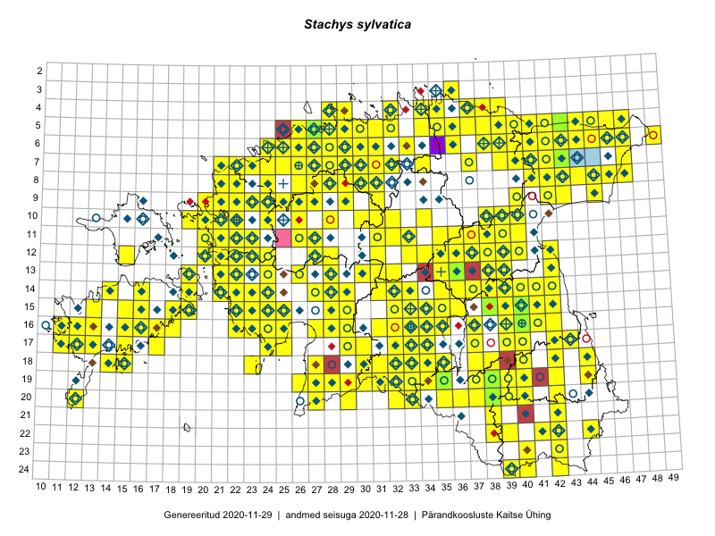

Stachys sylvatica
Uuendatud: 2016-12-02
Kaardile koondatud taksonid: Stachys sylvatica L.

Kaart põhineb 368 vaatlusel. Taksonit on leitud 248 ruudust.
Kuvatud viited 20 esimesele andmebaasikirjele, ülejäänud PlutoFis
- Malle Leht: 2015-05-16: : ala
- Peedu Saar, Timo Luhamäe: 2015-05-13: 06-40: ala
- Peedu Saar, Liina Oja: 2015-05-22: 19-29: ala
- Thea Kull: 2015-07-07: 16-40: ala
- Peedu Saar, Liina Oja: 2015-05-21: 16-25: ala
- Toomas Kukk, Eerik Leibak: 2015-08-08: 15-18: ala
- Toomas Kukk, Peedu Saar: 2014-09-13: 07-42: ala
- Toomas Kukk, Peedu Saar: 2014-09-23: 06-42: ala
- Peedu Saar: 2015-05-01: 15-42: ala
- Tiit Hallikma, Toomas Kukk: 2015-07-21: 05-44: ala
- Tiit Hallikma, Toomas Kukk: 2015-07-21: 05-45: ala
- Ott Luuk, Jaak-Albert Metsoja: 2015-05-27: 15-23: ala
- Ott Luuk, Toivo Sepp: 2015-07-29: 09-31: ala
- Peedu Saar, Ott Luuk: 2015-06-21: 14-42: ala
- Ott Luuk, Peedu Saar: 2015-07-27: 11-35: ala
- Peedu Saar: 2015-07-04: 18-44: ala
- Peedu Saar: 2015-07-15: 15-39: ala
- Peedu Saar, Eerik Leibak: 2015-07-30: 15-42: ala
- Toomas Kukk, Peedu Saar: 2014-07-09: 08-44: ala
- Peedu Saar, Liina Oja: 2015-06-08: 10-34: ala